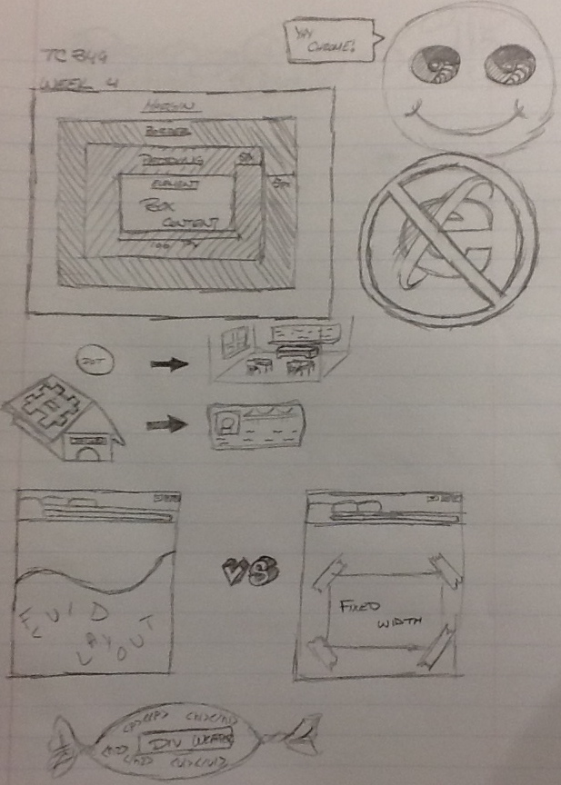
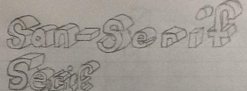

TC 349
 These sketch notes show some of the concepts covered in week four of TC 349. They show concepts such as not using Internet Explorer and to instead use Google Chrome, differences between fixed with and fluid layout, the box model, and more.